품질경영기사 (2017-05-07 기출문제)
1과목: 실험계획법
1. 3수준 요인 11개의 주효과에만 관심이 있어서 L27(313)직교배열표를 이용한 실험을 실시했다. 이 때, 오차의 자유도(Ve)는 얼마인가?
- 2
- 3
- 4
- 5
(정답률: 67%)

2. 요인 A, B, C가 있는 3요인실험에서 A, B요인은 랜덤화가 곤란하고, C요인은 랜덤화가 용이하여, A, B요인을 1차 단위로, C요인을 2차 단위로 하여 단일분할법을 적용하였다. 2차 단위의 요인에 해당되지 않는 것은?
- A×B
- A×C
- B×C
- C
(정답률: 77%)
3. 반복이 있는 2요인실험의 분산분석에서 교호작용이 유의하지 않아 오차항에 풀링했을 경우, 요인 B의 F0(검정통계량)은 약 얼마인가?
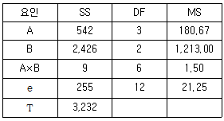
- 53.32
- 57.10
- 82.70
- 84.⑤
(정답률: 73%)
4. 분산분석표에 표기된 오차분산에 관한 사항으로 틀린 것은?
- 오차분산의 신뢰구간 추정은 X2분포를 활용한다.
- 오차의 불편분산이 요인의 불편분산보다 클 수는 없다.
- 오차분산은 요인으로서 취급하지 않은 다른 모든 분산을 포함하고 있다.
- 오차분산은 반복 실험을 할 경우 요인의 교호작용을 분리하여 분석할 수 있다.
(정답률: 65%)
5. 두 변수 x, y에 대해 상관관계를 분석한 결과 상관계수(γ)가 0.8일 때, 전체 변동에 대한 회귀변동의 결정계수(기여율)는 얼마인가?
- 0.04
- 0.20
- 0.64
- 0.89
(정답률: 79%)
6. 수준이 기술적인 의미를 가지며 실험자에 의하여 미리 정해질 수 있는 요인은?
- 제어요인
- 집단요인
- 블록요인
- 보조요인
(정답률: 73%)
7. 반복이 없는 22요인실험법에 관한 설명으로 틀린 것은?
- B의 주효과는
 이다.
이다. - A의 주효과는
 이다.
이다. - 교호작용효과는 AB는
 이다.
이다. - A, B, 교호작용 A×B의 자유도는 모두 1이다.
(정답률: 75%)
8. 3요인실험(A, B, C)의 각각 3수준 조합에서 4번 반복하여 실험을 했을 때 오차의 자유도는? (단, A×B×C의 교호작용은 오차항에 풀링하였다.)
- 64
- 54
- 81
- 89
(정답률: 63%)
9. 반복이 없는 2요인실험에 대한 설명 중 틀린 것은? (단, A의 수준수는 l, B의 수준수는 m이다.)
- 오차항의 자유도는(l-1)(m-1)이다.
- 분리해 낼 수 있는 제곱합의 종류는 SA, SB, SA×B, Se가 있다.
- 한 요인은 모수이고, 나머지 요인은 변량인 경우의 실험을 난괴법이라 한다.
- 모수모형의 경우 결측치가 발생하면 Yates가 제안한 방법으로 결측치를 추정하여 분석할 수 있다.
(정답률: 66%)
10. 난괴법 실험에서 A(모수요인), B(변량요인)인 경우, 모수요인 각 수순 Ai에서 모평균 μ(Ai)의 추정식
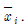
는?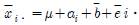
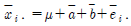
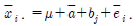
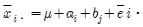
(정답률: 57%)
11. 3×3 라틴방격에서 표준 라틴방격(Latin Square)인 것은?
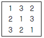
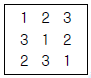
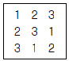
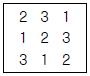
(정답률: 80%)
12. L8(27)직교배열표에서 교호작용 C×F의 제곱합(SC×F)은 얼마인가?(오류 신고가 접수된 문제입니다. 반드시 정답과 해설을 확인하시기 바랍니다.)
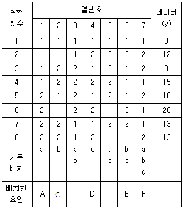
- 0.75
- 4.5
- 7.5
- 45
(정답률: 55%)
13. 23형의 교락법에서 인수분해식을 이용하여 단독교락을 실시하려 할 때의 설명 중 틀린것은?
- 블럭이 2개로 나누어지는 교락을 의미한다.
- (1)을 포함하지 않는 블럭을 주블럭이라고 한다.
- 주효과 A를 블럭과 교락시키면, 블럭 1은 (1), b, c, bc이고, 블럭 2는 a, ab, ac, abc가 된다.
- 블럭과 교락시키기 원하는 효과에 -1을 붙여, 인수분해를 풀어 +군과 -군으로 나누어 블럭을 배치한다.
(정답률: 74%)
14. Y공장은 프레스 가공기계 4대로 작업하고 있다. 적합품은 0, 부적합품은 1의 값을 주기로 하고, 4대의 기계에서 100개씩의 제품을 가지고 실험을 했더니 다음과 같은 데이터를 얻었다. 이 때 총제곱합(ST)은 약 얼마인가?
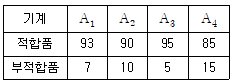
- 0.57
- 30.71
- 33.01
- 33.58
(정답률: 65%)
15. 23형의 1/2일부실시법에 의한 실험을 하기 위해 다음과 같이 블록을 설계하여 실험을 실시하였다. 실험 결과에 대한 해석으로서 틀린 것은?
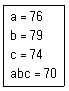
- 요인 A의 별명은 교호작용 B×C 이다.
- 블록에 교락된 교호작용은 A×B×C이다.
- 요인 A의 제곱합은 요인 C의 제곱합보다 크다.
- 요인 A의 효과는
 이다.
이다.
(정답률: 56%)
16. 다음의 표는 요인 A의 수준 4, 요인 B의 수준 3, 요인 C의 수준 2, 반복 2회의 지분 실험을 실시한 분산분석표의 일부이다.
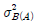
의 추정값은 얼마인가?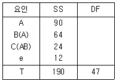
- 1
- 1.5
- 2.5
- 4
(정답률: 44%)
17. 1요인실험에 있어서 각 수준의 합계 A1, A2, ㆍㆍㆍAa가 모두 b개의 측정치 합일 경우, 다음 선형식의 대비가 되기 위한 조건식은? (단, Ci가 모두 0은 아니다.)
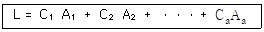
- C1+C2+ㆍㆍㆍCa=0
- C1+C2+ㆍㆍㆍCa=1
- C1×C2×ㆍㆍㆍ×Ca=0
- C1×C2×ㆍㆍㆍ×Ca=1
(정답률: 70%)
18. A요인은 4수준 취하고, 4회 반복하여 16회 실험을 랜덤한 순서로 행하여 분석한 결과 다음과 같은 분산분석표를 얻었다. 오차분산의 추정치
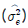
를 구하면 약 얼마인가?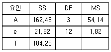
- 1.35
- 1.82
- 13.08
- 21.82
(정답률: 66%)
19. 망대특성 실험의 경우 특성치가 다음과 같을 때 SN비(signal-to-noise ratio)는 약 몇 db인가?
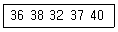
- －31.20
- －21.81
- 28.15
- 31.20
(정답률: 65%)
20. 일반적으로 오차(eij)는 정규분포 N(0,
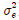
)으로부터 확률추출된 것이라고 가정한다. 이 가정이 의미하는 것이 아닌 것은?- 정규성(normality)
- 독립성(independence)
- 불편성(unbiasedness)
- 최소분산성(minimum variance)
(정답률: 71%)
2과목: 통계적품질관리
21. 모상관계수 p＝0인 모집단에서 크기 n의 시료를 추출하여 시료의 상관계수(γ)를 구한 후, 통계량
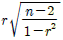
을 취하면, 이 통계량은 어떤 분포를 하는가?- t분포
- X2분포
- F분포
- 정규분포
(정답률: 57%)
22. 로트의 평균치가 클수록 좋은 경우, 가능한 한 합격시키고 싶은 로트의 평균값의 한계는 30%, 가능한 한 불합격시키고 싶은 로트의 평균값의 한계는 25%이다. 이 경우 α ＝ 0.⑤, β ＝0.10을 만족시키기 위한 시료의 최소 크기는 몇 개인가? (단, 로트의 모표준편차는 4%이다.)
- 4
- 6
- 8
- 10
(정답률: 32%)
23. 기준값이 주어진 관리도와 기준값이 주어지지 않은 관리도에 대한 설명에서 틀린 것은?
- 기준값이 주어진 관리도에서는 자료를 얻을 때 마다 관리도에 타점하고 이상 유무를 판단한다.
- 기준값이 주어진 관리도에서 사용하는 관리한계는 공정이 개선되더라도 계속 주어진 값을 가용해야 한다.
- 기준값이 주어지지 않은 관리도에서는 도출된 관리한계가 만족스러운 경우, 그 관리한계를 연장하여 기준값이 주어진 관리도의 관리한계로 사용할 수 있다.
- 기준값이 주어지지 않은 관리도에서는 관리한계를 벗어나는 점에 대해서는 그 원인을 찾아 조치한 경우, 그 점에 관한 데이턱를 제거한 후 관리한계를 다시 계산한다.
(정답률: 67%)
24. 관리도에서 군 구분 방법의 원칙에 대한 설명으로 틀린 것은?
- 군내의 산포는 우연원인에 의한 것만으로 나타나게 한다.
 관리도에서 관리계수가 1.2보다 크면 군구분이 나쁘다고 볼 수 있다.
관리도에서 관리계수가 1.2보다 크면 군구분이 나쁘다고 볼 수 있다.- 군내는 가능한 한 균일하게 되도록 하여 이상원인이 포함되지 않도록 한다.
- 군내의 산포에 의한 원인과 군간의 산포에 의한 원인을 기술적으로 구별되도록 한다.
(정답률: 59%)
25. 계수형 샘플링검사 절차-제1부：로트별 합격품질한계(AQL) 지표형 샘플링검사방식(KSQ ISO 2859-1：2014)에서 검사수준에 관한 설명 중 틀린 것은?
- 검사수준은 상대적인 검사량을 결정하는 것이다.
- 보통 검사수준은 Ⅰ, Ⅱ 및 Ⅲ으로 3개의 검사수준이 있다.
- S－1, S－2, S－3 및 S－4로 4개의 특별검사수준이 있다.
- 특별 검사수준의 목적은 필요에 따라서 샘플을 크게 해 두는 것이다.
(정답률: 50%)
26.
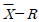
관리도에서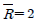
이고, R관리도의 UCL이 4.56이다. 이 때 군의 크기 n은 얼마인가?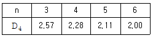
- 3
- 4
- 5
- 6
(정답률: 63%)
27. 5대의 라디오를 하나의 시료 군으로 구성하여 25개 시료 군을 조사한 결과 195개의 부적합이 발견되었다. 이 때 c관리도와 u관리도의 UCL은 각각 약 얼마인가?
- 7.8, 1.56
- 16.18, 5.31
- 16.18, 3.24
- 57.73, 5.31
(정답률: 33%)
28. 두 개의 모집단
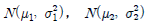
에서 H0：μ1=μ2를 검정하기 위하여 n1=10개, n2=9개의 샘플을 구하여 표본평균과 분산으로 각각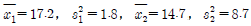
을 얻었다. 유의수준 α=0.⑤로 하여 등분산성의 여부를 검토할고 할 때, 틀린 것은? (단, F0.975(9, 8)＝4.36, F0.025(9, 8)＝0.2439이다.)- H0기각한다.
- 검정통계량 F0=0.357이다.
- 등분산성은 성립하지 않는다.
 이다.
이다.
(정답률: 50%)
29. 계수치 축차 샘플링 검사방식(KS Q ISO 8422：2006)에서 합격판정선(A)이 A=-2.319+0.⑤9nCUM, 불합격판정선(R)이 R=2.319+0.⑤9n CUM으로 주어졌다. 만약 어떤 로트가 이 검사에서 합격판정이 나지 않을 경우에 적용되는 누계 샘플 중지값(nt)이 226개로 알려져 있다면, 이 때 합격판정개수(ACt)는 얼마인가?
- 8개
- 10개
- 13개
- 14개
(정답률: 31%)
30. M기계회사로부터 납품되고 있는 부품의 표준편차는 0.4%이었다. 이번에 납품된 로트의 평균치를 신뢰도 95%, 정도 0.3%로 추정할 경우, 샘플을 최소 몇 개를 취하여야 하는가?
- 3개
- 5개
- 7개
- 9개
(정답률: 52%)
31. Y제품의 품질 특성에 대해 8개의 시료를 측정한 결과 3, 4, 2, 5, 1, 4, 3, 2로 나타났다. 이 데이터를 활용하여 σ2에 대한 95% 신뢰구간을 구했더니 0.75≤σ2≤7.10이였다. 귀무가설 H0：σ2＝9, 대립가설 H1：σ2≠9에 대하여 유의수준 α＝0.⑤로 검정한 결과로 맞는 것은?
- H0를 기각한다.
- H0를 채택한다.
- H0를 보류한다.
- H0를 기각해도 되고 채택해도 된다.
(정답률: 62%)
32. N(65, 12)을 따르는 품질 특성치를 위해 3σ의 관리한계를 갖는 개별치(X) 관리도를 작성하여 공정을 모니터링하고 있다. 어떤 이상요인으로 인해 품질특성치의 분포가 N(67, 12)으로 변화되었을 때, 관리도의 타점이 X관리도의 관리한계를 벗어날 확률은 약 얼마인가? (단, z가 표준정규변수일 때, P(z≤1)＝0.8413, P(z≤1.5)＝0.9332, P(z≤2)＝0.9772이며, 관리하한을 벗어나는 경우의 확률은 무시하고 계산한다.)(오류 신고가 접수된 문제입니다. 반드시 정답과 해설을 확인하시기 바랍니다.)
- 0.0668
- 0.1587
- 0.1815
- 0.2255
(정답률: 38%)
33. 재가공이나 폐기 처리비를 무시할 경우, 부적합품 발생으로 인한 손실비용(무검사비용)을 맞게 표시한 것은? (단, N은 전체 로트 크기, a는 개당 검사비용, b는 개당 손실비용, p는 부적합품률이다.)
- aN
- bN
- apN
- bpN
(정답률: 66%)
34. 크기가 1,000인 로트에서 50개의 시료를 비복원으로 랜덤추출하였다. 로트의 부적합품률은 1%라고 가정하고, 50개의 시료 중 부적합품이 1개 이하이면 해당로트를 합격시키는 검사법을 적용하고자 한다. 이 때 로트의 합격확률을 계산하는 방법으로 가장적합하지 않은 것은?
- 정규분포로 근사시켜 계산한다.
- 이항분포로 근사시켜 계산한다.
- 푸아송분포로 근사시켜 계산한다.
- 초기하분포를 이용하여 계산한다.
(정답률: 35%)
35. X 및 Y를 각각 정규분포 N(2, 3) 및 N(4, 6)을 따르는 독립 확률변수라 할 때, z=2+3X+Y의 분산은?
- 9
- 15
- 33
- 35
(정답률: 52%)
36. 확률분포에 대한 설명으로 틀린 것은?(오류 신고가 접수된 문제입니다. 반드시 정답과 해설을 확인하시기 바랍니다.)
- 푸아송분포의 평균과 분산은 같다
- 이항분포의 평균은 np이고, 표준편차는
 이다.
이다. - 초기하분포에서
 ≥10이면, 이항분포로 근사시킬 수 있다.
≥10이면, 이항분포로 근사시킬 수 있다. - 평균이 μ이고 표준편차가 σ인 정규모집단에서 샘플링한 데이터의 평균의 분포는 평균이 μ이고, 표준편차가
 이다.
이다.
(정답률: 56%)
37. 동일성 검정에 대한 설명 중 틀린 것은?
- 동일성 검정은 계수형 자료에 적합하다.
- 동일성 검정의 검정통계량은 카이제곱분포를 따른다.
- 기대도수를 구하기 위해 사용되는 확률의 합은 1일 필요가 없다. (즉, p11+ㆍㆍㆍ+p1c≠1이다.)
- 동일성 검정총계량의 자유도는 일반적으로 (γ-1)(c-1)로 표현된다. (여기서, γ은 조사표에서 행의 수, c는 조사표에서 열의 수이다.)
(정답률: 54%)
38. 모집단을 여러 개의 층(層)으로 나누고 그 중에서 일부를 랜덤샘플링(random sampling) 한 후 샘플링된 층에 속해 있는 모든 제품을 조사하는 샘플링 방법은?
- 집락샘플링(cluster sampling)
- 층별샘플링(stratified sampling)
- 계통샘플링(systematic sampling)
- 단순랜덤샘플링(simple random sampling)
(정답률: 54%)
39. A, B 두 회사에서 제조되는 자전거 표면의 흠의 수를 조사하였더니 A회사는 자전거 1대당 10군데, B회사는 자전거 1대당 25군데가 검출되었다. 유의수준 1%로 B회사에서 제조되는 자전거 1대당 표면의 흠의 수가 A회사보다 더 많은지에 대한 검정결과로 맞는 것은? (단, u0.995＝2.576, u0.99＝2.326이다.)
- 알 수 없다.
- 두 회사 제품의 흠의 수는 같다.
- A회사 제품의 흠의 수가 더 많다.
- B회사 제품의 흠의 수가 더 많다.
(정답률: 58%)
40. Y공작기계로 만든 샤프트 중에서 랜덤하게 12개를 샘플링하여 외경을 측정하였더니, 평균
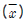
＝112.7, 제곱합(S)＝176을 얻었다. 샤프트 외경의 모평균 μ의 95% 신뢰구간은 약 얼마인가? (단, t0.975(11)＝2.201, t0.975(12)＝2.179이다.)- 112.7±2.045
- 112.7±2.541
- 112.7±3.045
- 112.7±3.541
(정답률: 52%)
3과목: 생산시스템
41. 유사한 생산흐름을 갖는 제품들을 그룹화하여 생산효율을 증대시키려고 하는 설비의 배치방식은?
- GT 배치
- 공정별 배치
- 라인 배치
- 프로젝트 배치
(정답률: 68%)
42. 외주업체를 다수의 복수공급자로 가져갈 경우 규모의 경제가 어려워지므로 Global 기업들은 구성품 단위로 단일공급자를 가져가는 경우가 일반적이다. 이러한 경우에 나타나는 문제점에 해당하는 것은?
- 입고자재의 단가조정이 어렵다.
- 공급자의 기술력향상을 기대하기 어렵다.
- 공급의 차질이 발생한 경우 대응이 어렵다.
- 입고자재의 균일한 품질을 기대하기 어렵다.
(정답률: 61%)
43. JIT시스템에서 생산준비시간의 축소와 소로트화에 대한 설명으로 틀린 것은?
- 소로트화는 회차당 생산량을 가능한 최소화하는 것을 뜻한다.
- JIT시스템에서는 평준화 생산방식으로 소로트 생산방식을 실현하고 있다.
- 생산준비시간의 축소는 준비교체 횟수를 감소시켜 실현하는 것을 목적으로 한다.
- 생산준비시간을 고정된 개념으로 보지 않고 소로트화로 생산준비시간을 단축하려 한다.
(정답률: 54%)
44. 설비의 정기적인 수리주기를 미리 정하지 않고 설비진단기술에 의해 설비열화나 고장의 유무를 관측하여 그 결과에 의하여 필요한시기에 적정한 수리를 실시하는 보전방식은?
- 예지보전
- 긴급보전
- 사후보전
- 개량보전
(정답률: 53%)
45. 고정비(F), 변동비(V), 개당 판매가격(P), 생산량(Q)이 주어졌을 때 손익분기점을 산출하는 식은?
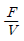
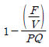
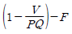
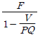
(정답률: 61%)
46. 테일러 시스템의 과업관리의 원칙에 해당되지 않는 것은?
- 작업에 대한 표준
- 이동조립법의 개발
- 공정한 1일 과업량의 결정
- 과업미달성 시 작업자의 손실
(정답률: 59%)
47. 총괄생산계획(APP) 기법 중 선형결정기법(LDR)에서 사용되는 근사 비용함수에 포함되지 않는 비용은?
- 잔업비용
- 설비투자비용
- 고용 및 해고 비용
- 재고비용·재고부족비용·생산준비비용
(정답률: 46%)
48. MRP에서 부품전개를 위해 사용되는 양식에 쓰이는 용어에 관한 설명으로 틀린 것은?
- 순소요량(net requirements)은 총소요량에서 현 재고량을 뺀 후 예정수취량을 더한 것이다.
- 예정수취량(scheduled receipts)은 주문은 했으나 아직 도착하지 않은 주문량을 의미한다.
- 계획수취량(planned receipts)은 아직 발주하지 않은 신규 발주에 따라 예정된 시기에 입고될 계획량을 의미한다.
- 발주계획량(planned order releases)은 필요시수령이 가능하도록 구매주문이나 제조주문을 통해 발주하는 수량으로 보통 계획수취량과 동일하다.
(정답률: 57%)
49. 공급사슬이론에서 채찍효과를 발생시키는 주원인은 수요나 공급의 불확실성에 있다. 이러한 채찍효과의 원인을 내부원인과 외부원인으로 구분하였을 때, 내부원인에 해당되지 않는 것은?
- 설계변경
- 정보오류
- 주문수량변경
- 서비스/제품 판매촉진
(정답률: 45%)
50. 경제적 발주량의 결정 과정에 관한 설명으로 틀린 것은? (단, 연간 소요량＝D, 단가＝A, 재고 유지 비율＝I, 1회 발주량＝Q, 1회 발주비＝C이다.)
- 연간 발주비용은 DC/Q이다.
- 연간 재고유지비는 QAI/2이다.
- 발주횟수가 증가함에 따라 재고유지비용도 증가한다.
- 연간 재고유지비와 연간 발주비가 같아지는 점은 경제적 발주량이 정해지는 점이다.
(정답률: 46%)
51. 관측 평균시간 5분, 객관적 레이팅에 의해서 1단계 평가계수 95%, 2단계 조정계수 15%, 여유율 20%일 경우의 표준시간은 약 몇 분인가?
- 5.09분
- 6.56분
- 7.56분
- 8.39분
(정답률: 48%)
52. MTM법에서 90초는 약 몇 TMU인가?
- 250
- 417
- 2,500
- 4,170
(정답률: 43%)
53. 기업에서 다품종에 대한 효과적인 제품조합을 위해 손익분기점 분석을 많이 활용한다. 다음 중 손익분기점 분석의 방법에 해당되지 않는 것은?
- 평균법
- 기준법
- 개별법
- 단체법
(정답률: 63%)
54. 가공조립산업에서 설비종합효율을 높이기 위하여 시간가동률을 저해하는 로스(loss)를 최소로 하려고 한다. 이에 해당되는 것은?
- 초기수율로스
- 속도저하로스
- 작업준비·조정로스
- 잠깐정지·공회전로스
(정답률: 38%)
55. PERT에서 어떤 활동의 3점 시간견적결과(4, 9, 10)을 얻었다. 이 활동시간의 기대치와 분산은 각각 얼마인가?
- 23/3, 5/3
- 23/3, 1
- 25/3, 5/3
- 25/3, 1
(정답률: 33%)
56. 종래 독립적으로 운영되어 온 생산, 유통, 재무, 인사 등의 단위별 정보시스템을 하나로 통합하여, 수주에서 출하까지의 공급망과 기간업무를 지원하는 통합된 자원관리시스템은?
- JIT(Just In Time)
- ERP(Enteprise Resources Planning)
- BPR(Business Process Reengineering)
- MRP(Material Requirements Planning)
(정답률: 57%)
57. 누적예측오차(Cumulative sum of Forecast Errors)를 절대 평균편차(Mean Absolute Deviation)로 나눈 것을 무엇이라고 하는가?
- TS(추적지표)
- SC(평활상수)
- MSE(평균제곱오차)
- CMA(평균중심이동)
(정답률: 47%)
58. 동작경제의 원칙 중 신체 사용에 관한 원칙으로 맞는 것은?
- 모든 공구나 재료는 정위치에 두도록 하여야 한다.
- 팔 동작은 곡선보다는 직선으로 움직이도록 설계한다.
- 근무시간 중 휴식이 필요한 때에는 한 손만 사용한다.
- 두 손의 동작은 동시에 시작하고 동시에 끝나도록 한다.
(정답률: 54%)
59. 어떤 가공공정에서 1명의 작업자가 2대의 기계를 담당하고 있다. 작업자가 기계에서 가공품을 꺼내고 가공될 자재를 장착시키는데2.4분이 소요되며, 가공품을 검사, 포장, 이동하는 기계와 무관한 작업자의 활동시간은 1.6분이 소요된다. 기계의 자동 가공시간이 8.6분이라면, 제품 1개당 소요되는 정미시간은 약 몇 분인가?
- 4.0분
- 5.5분
- 6.3분
- 8.0분
(정답률: 30%)
60. 작업우선순위 결정기법 중 긴급률(Critical Ratio：CR)규칙에 대한 설명으로 틀린 것은?
- CR＝잔여납기일수/잔여작업일수
- CR값이 작을수록 작업의 우선순위를 빠르게 한다.
- 긴급률 규칙은 주문생산시스템에서 주로 활용된다.
- 긴급률 규칙은 설비이용률에 초점을 두고 개발한 방법이다.
(정답률: 49%)
4과목: 신뢰성관리
61. 2개의 부품이 병렬구조로 구성된 시스템이 있다. 각 부품의 고장률이 각각 λ1＝0.02/hr, λ2＝0.04/hr일 때, 이 시스템의 MTTF는 약 몇 시간인가?
- 58.3시간
- 63.3시간
- 70.5시간
- 75.0시간
(정답률: 39%)
62. 트랜지스터의 수명분포는 지수분포를 따르고, 고장율
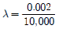
hr이다. 1,000시간에서 트랜지스터의 신뢰도는 약 얼마인가?- 0.9980
- 0.9990
- 0.9998
- 0.9999
(정답률: 54%)
63. 와이블(Weibull) 확률지를 이용한 신뢰성척도의 추정방법을 설명한 것으로 틀린 것은? (단, t는 시간이고 F(t)는 t의 분포함수이다.)
- 평균수명은
 으로 추정한다.
으로 추정한다. - 모분산
 으로 추정한다.
으로 추정한다. - 와이블(Weibull) 확률지의 X축의 값은 t, Y축의 값은 ㅣln(ln{1-F(t)})이다.
- 특성수명 η의 추정값은 타점의 직선이 F(t)＝63%인 선과 만나는 점의 t눈금을 읽으면 된다.
(정답률: 53%)
64. 신뢰성의 척도 중 시점 t에서의 순간 고장률을 나타낸 것으로 틀린 것은? (단, R(t)는 신뢰도, F(t)는 불신뢰도, f(t)는 고장확률밀도함수, n(t)는 시점 t에서의 잔존개수이다.)
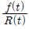
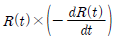
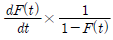
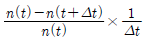
(정답률: 38%)
65. 어떤 시스템의 평균수명(MTBF)은 15,000시간으로 추정되었고, 이 기계의 평균수리시간(MTTR)은 5,000시간이다. 이 시스템의 가용도는 몇 %인가?
- 33%
- 67%
- 75%
- 86%
(정답률: 56%)
66. 20개의 동일한 설비를 6개가 고장이 날 때까지 시험을 하고 시험을 중단하였다. 시험 결과 6개 설비의 고장시간은 각각 56, 65, 74, 99, 1⑤, 115시간째 이었다. 이 제품의 수명이 지수분포를 따르는 것으로 가정하고, 평균수명에 대한 95% 신뢰구간추정 시 하측신뢰한계 값을 구하면 약 얼마인가? (단,
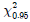
(12)＝21.03, (14)＝23.68,
(14)＝23.68,  (12)＝23.34,
(12)＝23.34, 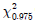
(14)＝26.12이다.)(오류 신고가 접수된 문제입니다. 반드시 정답과 해설을 확인하시기 바랍니다.)- 101
- 179
- 182
- 202
(정답률: 11%)
67. 신뢰도 배분에 대한 설명으로 틀린 것은?
- 리던던시 설계이후에 신뢰도를 배분한다.
- 시스템 측면에서 요구되는 고장률의 중요성에 따라 신뢰도를 배분한다.
- 상위 시스템으로부터 시작하여 하위시스템으로 배분한다.
- 신뢰도를 배분하기 위해서는 시스템의 요구기능에 필요한 직렬결합 부품 수, 시스템설계 목표치 등의 자료가 필요하다.
(정답률: 32%)
68. 시스템 수명곡선인 욕조곡선의 초기고장기간에 발생하는 고장의 원인에 해당되지 않는 것은?
- 불충분한 정비
- 조립상의 과오
- 빈약한 제조기술
- 표준 이하의 재료를 사용
(정답률: 58%)
69. 수명 데이터를 분석하기 위해서는 먼저 그 데이터가 가정된 분포에 적합한지를 검정하여야 한다. 이 경우 적용되는 기법이 아닌 것은?
- X2검정
- Pareto 검정
- Bartlett 검정
- Kolmogorov-Smirnov 검정
(정답률: 43%)
70. 10개의 제품을 모두 고장이 날 때까지 시험하였다. 중앙순위(median rank)법을 사용하였을 때, 6번째 고장시간에 대한 누적고장확률(F(t))은 약 얼마인가?
- 0.4017
- 0.4548
- 0.5481
- 0.6076
(정답률: 56%)
71. FTA 작성 시 모든 입력사상이 고장날 경우에만 상위사상이 발생하는 것을 무엇이라 하는가?
- 기본사상
- OR 게이트
- 제약게이트
- AND 게이트
(정답률: 50%)
72. 신뢰성 샘플링 검사에서 지수분포를 가정한 신뢰성 샘플링 방식의 경우 λ0와 λ1을 고장률척도로 하게 된다. 이 때 λ1을 무엇이라고하는가?
- ARL
- AFR
- AQL
- LTFR
(정답률: 44%)
73. 샘플 5개를 50시간 가속수명시험을 하였고, 고장이 한 개도 발생하지 않았다. 신뢰수준 95%에서 평균수명의 하한값은 약 얼마인가? (단,
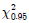
(2)＝5.99이다.)- 84시간
- 126시간
- 168시간
- 252시간
(정답률: 34%)
74. 재료의 강도는 평균 50kg/mm2, 표준편차가 2kg/mm2, 하중은 평균 45kg/mm2, 표준편차가 2kg/mm2인 정규분포를 따른다고 한다. 이 재료가 파괴될 확률은? (단, Z는 표준정규분포의 확률변수이다.)
- Pr(Z＞-1.77)
- Pr(Z＞1.77)
- Pr(Z＞-2.50)
- Pr(Z＞2.50)
(정답률: 45%)
75. 기본설계 단계에서 FMEA를 실시한다면 큰 효과를 발휘할 수 있다. FMEA의 결과로 얻을 수 있는 항목이 아닌 것은?
- 설계상 약점이 무엇인지 파악
- 컴포넌트가 고장이 발생하는 확률의 발견
- 임무달성에 큰 방해가 되는 고장모드 발견
- 인명손실, 건물파손 등 넓은 범위에 걸쳐 피해를 주는 고장모드 발견
(정답률: 40%)
76. 현장시험의 결과 아래 표와 같은 데이터를 얻었다. 5시간에 대한 보전도를 구하면 약몇 %인가? (단, 수리시간은 지수분포를 따른다.)
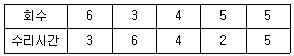
- 60.22
- 65.22
- 70.22
- 73.34
(정답률: 28%)
77. 파괴시험에 해당되지 않는 것은?
- 동작시험
- 정상수명시험
- 가속수명시험
- 강제열화시험
(정답률: 57%)
78. A, B, C의 총 3개의 부품이 직렬 연결된 시스템의 MTBF를 60시간 이상으로 하고자 한다. A와 B의 MTBF는 각각 300시간, 400시간이면 C부품의 MTBF는 약 얼마 이상인가?
- 70시간 이상
- 80시간 이상
- 90시간 이상
- 93시간 이상
(정답률: 43%)
79. 고장률 λ=0.001/시간인 지수분포를 따르는 부품이 있다. 이 부품 2개를 신뢰도 100%인 스위치를 사용하여 대기결합 모델로 시스템을 만들었다면, 이 시스템을 100시간 사용하였을 때의 신뢰도는 부품 1개를 사용한 경우와 비교하여 몇 배로 증가하는가?
- 1.0
- 1.1
- 1.5
- 2.0
(정답률: 32%)
80. 평균수명이 5로 일정한 시스템에서 t=2 시점에서의 신뢰도는?
- e-0.6
- e-0.5
- e-0.4
- e-0.3
(정답률: 57%)
5과목: 품질경영
81. 사내표준화의 대상이 아닌 것은?
- 방법
- 재료
- 기계
- 특허
(정답률: 61%)
82. 품질을 형성하는 직능 또는 업무를 목적, 수단의 계열에 따라 단계별로 세부적으로 전개해 나가는 것을 무엇이라 하는가?
- 품질관리
- 품질기능전개
- 품질매뉴얼
- 품질정보시스템
(정답률: 58%)
83. 품질분임조를 성공적으로 운영하기 위해서 지켜야 할 내용이 아닌 것은?
- 품질분임조 활동은 일상 활동과 구별해서는 안된다.
- 품질분임조 활동의 주제 선정은 분임조장이 연구하여 결정한다.
- 종업원들을 각 부서별로 자발적으로 가입하도록 유도하여야 한다.
- 품질분임조 활동을 시작하기 전에 종업원교육에 시간을 투자해야 한다.
(정답률: 53%)
84. 품질전략을 수립할 때 계획단계(전략의 형성단계)에서 SWOT 분석을 많이 활용하고 있다. 여기서 O는 무엇을 뜻하는가?
- 기회
- 위협
- 강점
- 약점
(정답률: 61%)
85. 품질경영을 성공적으로 실현하기 위해서 품질조직을 구성하였을 때 최고경영자의 중요한 역할에 해당되지 않는 것은?
- 강력하고 지속적인 리더십을 발휘
- 조직의 경영철학을 바탕으로 품질방침을 결정
- 전사적이고 효율적으로 전개할 수 있는 품질경영시스템을 확립
- 품질정보를 수집하고 해석하여 각 부문에 품질정보의 피드백 수행
(정답률: 57%)
86. 다음 내용은 산업표준화법의 목적을 설명한 것이다. ( ) 안에 들어가는 말을 순서대로 나열한 것 중 맞는 것은?
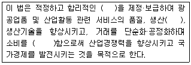
- 산업표준-효율-합리화
- 산업표준-납기-합리화
- 품질기준-효율-표준화
- 품질기준-납기-표준화
(정답률: 45%)
87. 측정시스템이 통계적 특성을 적절히 유지하고 있는지를 평가하는 방법인 측정시스템(MSA)에 관한 설명으로 틀린 것은?
- 선형성(linearity)은 특정 계측기로 동일 제품츨 측정하였을 때 측정범위 내에서 측정된 평균값을 의미한다.
- 재현성(reproducibility)은 동일 계측기로 동일 제품을 여러 작업자가 측정하였을 때 나타나는 결과의 차이를 의미한다.
- 편의(bias)는 특정 계측기로 동일 제품을 측정했을 때 얻어지는 측정값의 평균과 이 특성의 참값과의 차이를 의미한다.
- 반복성(repeatability)은 동일 작업자가 동일측정기를 가지고 동일 제품을 측정하였을 때 파생되는 측정의 변동을 의미한다.
(정답률: 39%)
88. 길이가 각각 X1~N(5.00, 0.252), X2~N(7.00, 0.362), X3~N(9.00, 0.492)인 3부품을 임의의 조립방법에 의해 길이로 직렬연결할 때 (X1+X2+X3)의 공차는 ±3σ로 잡고, 조립시의 오차는 없는 것으로 한다면 이 조립 완제품의 규격은 약 얼마인가? (단, 단위는 cm이다.)
- 21±0.657
- 21±1.048
- 21±1.972
- 21±3.146
(정답률: 30%)
89. 신제품개발, 신기술개발 또는 제품책임문제의 예방 등과 같이 최초의 시점에서는 최종 결과까지의 행방을 충분히 짐작할 수 없는 문제에 대하여, 그 진보과정에서 얻어지는 정보에 따라 차례로 시행되는 계획의 정도를 높여 적절한 판단을 내림으로써 사태를 바람직한 방향으로 이끌어 가거나 중대 사태를 회피하는 방책을 얻는 방법은?
- 계통도법
- 연관도법
- 친화도법
- PDPC법
(정답률: 46%)
90. 품질심사의 심사주체에 따른 분류에 관한 설명으로 틀린 것은?
- 기업에 의한 자체 품질활동 평가
- 구매자에 의한 협력업체에 대한 품질활동평가
- 협력업체에 의한 고객사 제품의 품질수준 평가
- 심사기관에 의한 인증 대상기업의 품질활동 평가
(정답률: 42%)
91. 품질경영시스템-기본사항 및 용어(KS Q ISO 9000：2015)에서 규정하고 있는 품질의 정의로 맞는 것은?
- 조직의 품질경영시스템에 대한 시방서
- 상호 관련되거나 상호 작용하는 요소들의 집합
- 대상의 고유 특성의 집합이 요구사항을 충족시키는 정도
- 최고경영자에 의해 표명된 조직이 되고 싶어하는 것에 대한 열망
(정답률: 55%)
92. PL(Product Liability)과 가장 관계가 깊은 것은?
- 안전성
- 유용성
- 신뢰성
- 경제성
(정답률: 39%)
93. 소비자가 제품을 선택하는데 도움이 되는 품질보증 표시의 유형에 대한 설명으로 틀린것은?
- 생산자의 상표 그 자체를 신뢰하는 경우
- 법률적 규제에 의해서 그 마크가 없으면 판매할 수 없는 경우
- 수입 전기용품의 경우는 수입업자가 상표를 부착하여 판매하는 경우
- 생산자가 임의로 정부기관 등의 관련기관의 보증 마크를 취득해서 표시하는 경우
(정답률: 41%)
94. 품질보증의 주요기능 중 가장 나중에 실시하여야 하는 것은?
- 설계품질의 확보
- 품질방침의 설정
- 품질조사의 클레임 처리
- 품질정보의 수집·해석·활용
(정답률: 41%)
95. 6시그마 품질혁신운동에서 사용하는 시그마 수준 측정과 공정능력지수(CP)의 관계를 맞게 설명한 것은?
- 시그마 수준과 공정능력지수는 차원이 다르기 때문에 상호간에 관련성이 없다.
- 시그마 수준은 공정능력지수에 3을 곱하여 계산할 수 있다. 즉, CP값이 1이면 3시그마 수준이 된다.
- 시그마 수준은 부적합품률에 대한 관계를 나타내고, 공정능력지수는 적합품률을 나타내는 능력이므로 시그마 수준과 공정능력지수는 반비례 관계이다.
- 시그마 수준에서 사용하는 표준편차는 장기표준편차로 계산되고 공정능력지수의 표준편차는 군내변동에 대한 단기표준편차로 계산되므로 공정능력지수는 기술적 능력을, 시그마 수준은 생산수준을 나타내는 지표가 된다.
(정답률: 46%)
96. 공정능력을 현재의 수준으로 유지하면서 제품의 단위당 가공시간을 단축시키는 생산성 향상을 도모하는 것이 바람직한 수준은?
- CP=0.45
- CP=0.99
- CP=1.18
- CP=1.88
(정답률: 45%)
97. 다음 중 특성요인도 작성 시 가장 먼저 하여야 할 사항은?
- 요인을 정한다.
- 품질특성을 정한다.
- 목적, 효과, 작성자, 시기 등을 기입한다.
- 큰 가지가 되는 화살표를 왼쪽에서 오른쪽으로 긋는다.
(정답률: 38%)
98. 애프터서비스와 관련한 비용은 어느 비용에 해당하는가?
- 외부실패비용
- 예방비용
- 내부실패비용
- 평가비용
(정답률: 50%)
99. 다음의 데이터의 품질코스트 항목에서 예방코스트(P-Cost)를 집계한 결과로 맞는 것은?
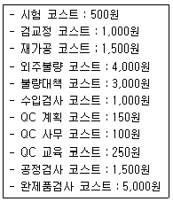
- 예방코스트는 250원이다.
- 예방코스트는 400원이다.
- 예방코스트는 500원이다.
- 예방코스트는 1,5000원이다.
(정답률: 50%)
100. 일종의 품질 모티베이션 활동인 자율경영팀에 관한 내용으로 틀린 것은?
- 상호신뢰와 책임감을 고취시킨다.
- 소집단 보다는 큰 집단을 전제로 한다.
- 작업계획 및 통제는 물론 작업개선에 중점을 둔다.
- 공동목적을 달성하기 위해 상당한 권한을 위임 받는다.
(정답률: 42%)